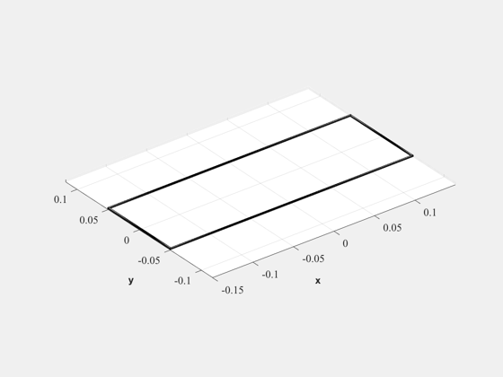

Design an air coil magnetic torquer for a CubeSat.
The wire is wrapped around the CubeSat frame.
------------------------------------------------------------------------ See also RVFromKepler, Date2JD, BDipole, DiameterAWG, CreateTable ------------------------------------------------------------------------
Contents
%-------------------------------------------------------------------------- % Copyright (c) 2010 Princeton Satellite Systems, Inc. % All rights reserved. %-------------------------------------------------------------------------- % Since version 10. %--------------------------------------------------------------------------
Requirements
%------------- torque = 0.25e-6*10; % Nm p = 0.05; % power in W aWG = 36; % American Wire Gauge
Find the magnetic field in the orbit
%-------------------------------------
el = [7100 pi/2 0 0 0 0];
[r, v, t] = RVFromKepler( el );
jD = Date2JD([2013 4 3 0 0 0]) + t/86400;
b = BDipole( r, jD );
bMag = mean(Mag(b));
Find the dipole moment
%-----------------------
m = torque/bMag;
densityConductor = 8960;
conductivity = 59.6e6;
Dimensions of the CubeSat
%-------------------------- l = 0.3; w = 0.1; a = l*w; % Area of a 3U CubeSat coil
Amp-turns
%----------
dipole = m;
nI = dipole/a;
Perimeter
%----------
c = 2*(l+w);
Wire radius
%------------
rWire = 0.0005*DiameterAWG( aWG );
Solve for n and i
%------------------ % m = nia % p = i^2 nc/(aW*rho) % i = m/(n*a) % p = (m^2/na^2)*c/(aW*rho)
Wire area
%----------
aW = pi*rWire^2;
Solve for number of turns and current
%--------------------------------------
n = m^2/(p*a^2)*c/(aW*conductivity);
i = m/(n*a);
r = n*c/(conductivity*aW);
Check the power and dipole moment
%----------------------------------
p = i^2*r;
m = n*i*a;
Voltage
%-------- v = i*r; n = ceil(n); mass = aW*c*n*densityConductor; q = {'Number of turns' ,ceil(n),'';... 'Mass' ,mass,'kg';... 'Torque' ,torque*1e6,'$\mu$Nm';... 'Dipole' ,m,'ATM$^2$';... 'Wire Gauge' ,aWG,'AWG';... 'Power' ,p,'W';... 'Voltage' ,v,'V';... 'Current' ,i,'A'}; AirCoreTorquerModel(n,rWire,[l w]); CreateTable( q, 'MagTorquer' ) %--------------------------------------